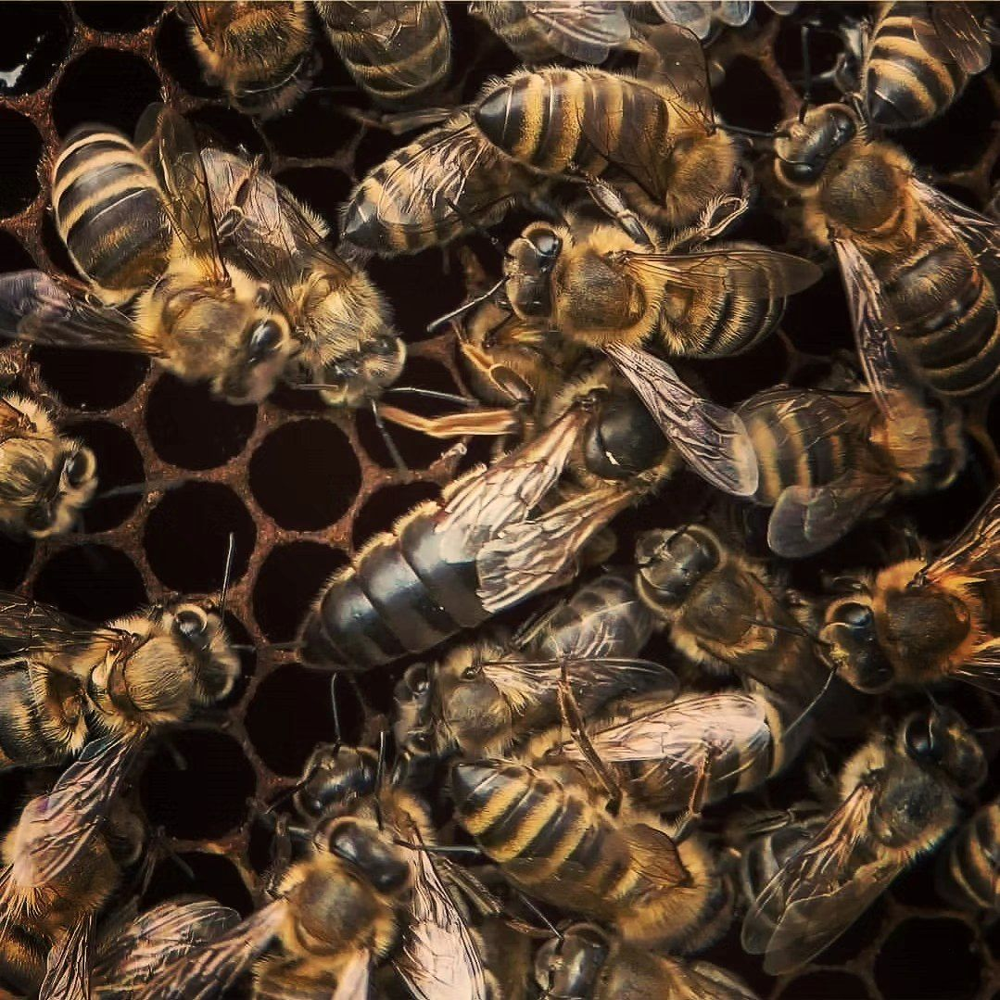

Пчёлам угрожает несколько вещей, и пасечник следит за ними в течение всего года.
Пчела, которая собирает нектар на обработанном поле или в саду, может принести яд в улей. Это особенно опасно во время цветения, когда пчёл на цветах больше всего. Поэтому важно, чтобы обработки не совпадали с цветением и чтобы о них знали пасечники рядом.
Варроа — мелкий паразит, который живёт на взрослых пчёлах и в расплоде, питается их тканями и переносит вирусы. Если его не контролировать, семья слабеет и, как правило, погибает за один-три года. Поэтому борьба с клещом — ежегодная работа любого пасечника. Обработки проводят после откачки, чтобы препараты не попали в мёд, больше об этом в статье «Осень и зима».
Есть болезни, которые поражают личинок и очень быстро распространяются между ульями. Поэтому пасечник регулярно осматривает рамки и следит за чистотой улья и инвентаря.
Холодная дождливая весна не даёт пчёлам вылетать, а засуха сокращает выделение нектара, поэтому мёда и запасов корма выходит меньше. Беда и тогда, когда вокруг одно поле одной культуры: пчёлам нужно разнообразие растений с цветением от ранней весны до осени, его описывает календарь «Медоносы».
Восковая моль портит соты в слабых семьях и в запасных рамках. В конце лета на слабые семьи нападают осы и шершни, а зимой в улей могут забраться мыши, поэтому летки сужают. Всё это опасно в основном для слабых семей, так что пасечник заботится прежде всего о том, чтобы семьи были сильными.
Заметить такие вещи помогает регулярный осмотр. Поэтому для пасечника наблюдение — главный инструмент.
Один человек не изменит погоду и не остановит все обработки, но может посадить цветы, оставить некошеным участок и не опрыскивать растения во время цветения. Об этих простых шагах и рассказывает статья «Как помочь пчёлам».
Клеща и корм пасечник контролирует сам, а вот погоду, соседские обработки и исчезновение лугов — нет. Поэтому настоящее влияние имеет то, что происходит вокруг пасеки: разнообразие растений и разумное отношение к обработкам.
Почему пчёлы гибнут зимой?
Самые частые причины: сильное поражение клещом, слабая семья, мало корма и влажный холодный улей.
Опасны ли для пчёл пестициды?
Да, особенно те, что попадают на цветущие растения. Безопаснее всего обрабатывать вне цветения.
Что я могу сделать для пчёл?
Кое-что описано в статье «Как помочь пчёлам».